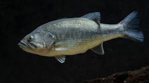

About Bass

Bass are one of the most popular game fish in the Salt River. Known for their aggressive strikes and fighting spirit, bass provide an exciting challenge for anglers of all skill levels.
The Salt River is home to both Largemouth and Smallmouth bass. Largemouth bass can be found in the slower, deeper sections of the river, while Smallmouth prefer the faster, rocky areas.
Best Fishing Spots: The deeper pools near the river bends and areas with submerged vegetation are prime locations for bass.
Best Bait: Live minnows, worms, and artificial lures such as spinnerbaits and crankbaits are effective for catching bass.